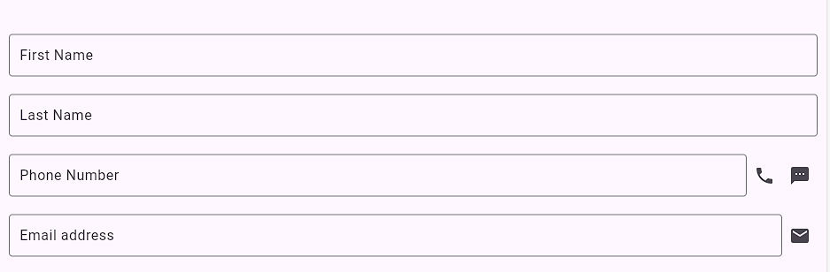

For this week's lab, show your knowlege of creating a second page for your app:
Take your login page from your Week4 branch and create a Week5 branch. Add a second page to your app called ProfilePage. Then when you use your login page, and your password is correct, then navigate to your new page. Add a Snackbar that shows a message saying "Welcome Back" followed by your login name from the first page
The second page should have four TextFields:

The Phone Number should have two buttons beside it: Telephone, SMS. You can use a normal ElevatedButton() widget and the child is an Icon object
like we covered in the BottomNavigationBar.
Normally, a textField will go all the way across the screen, however if you mix elements that grow like a TextField with elements that have a fixed size like
a Button, then your app will crash. To fix it, you must put the TextField inside a Flexible( child: ) widget. The reason is here:
https://stackoverflow.com/questions/45986093/textfield-inside-of-row-causes-layout-exception-unable-to-calculate-size.
If you click on the Telephone button,
it should launch a phone dialer for that phone number. If you click on the SMS button, then it should launch
a text messaging application to that phone number.
Email Address should have a "mail" button beside it where if you click on the button, it launches an email program with an email pre-populated with the email address that is in the TextField. Use the "mailto:" protocol.
Use the repository pattern for storing the user's data, and add two functions to the reporitory class:
You should call these two functions in the initState() function and the dispose() function to automatically load and save the variables from the repository.
The marks for this lab are (7 marks):